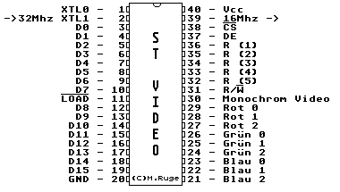

Previous
Next
TOC
Die Pinbelegung des ST Videochips

Clock cycles per line (50Hz)
: 512
NOPs per scan line (50Hz)
: 128
Scan lines per VBL (50Hz)
: 313
Clock cycles per line (60Hz)
: 508
NOPs per scan line (60Hz)
: 127
Scan lines per VBL (60Hz)
: 315
Clock cycles per VBL
: 160256
NOPs per VBL
: 40064
Pixels per clock cycle (low res)
: 1
Pixels per clock cycle (med res)
: 2
Pixels per clock cycle (high res) : 4
Pixels per NOP (low res)
: 4
Pixels per NOP (med res)
: 8
Pixels per NOP (high res)
: 16
Kapitel Die Pinbelegung des ST Videochips, Seite 1